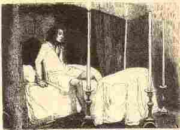

Remed an amourus klañv
Le remède de l'amoureux malade
Texte recueilli par François-Marie Luzel
auprès de Catherine Renaud, à Keranborgne-Pleyben,
Publié dans "Sonioù Breizh-Izel" en 1890
Mélodie
"La Basse-Bretagne à ses enfants émigrés"
Tirée de "La paroisse bretonne de Paris", avril 1900
recueillie auprès de F. Falquerho, par l'Abbé F. Cadic
Arrangement Christian Souchon (c) 2012Source: PUF Rennes - Dastum - CRBC "Chansons populaires de Bretagne"

REMED AN AMOUROUS CLANV |
LE REMÈDE DE LAMOUREUX MALADE |
LE REMÈDE DE LAMOUREUX MALADE |
English Translation: "A remedy for a sick lover"
|
It's not good, so wise people say (two times) To let nature sway her own way; (three times) It is wise to control nature: Be not tender beyond measure! No rain ever that did not cease, No wind that time did not appease; Tenderness may unite two fools: As time goes by, tenderness cools. And yet a handful of fondness, Is more worth than wealth, quite doubtless! |
While fondness brings your heart comfort, Riches have double-edged import. My girl's beauty I highly prize: With her pink cheeks, with her blue eyes, With her mouth fair beyond compare, About her, aye, she has an air! Her eyes illuminate her face, They are limpid and full of grace, Her brow, a half-moon as it were... With all my heart I do love her. Like nutmeg is her darling heart: The highest delight, for my part; |
Nutmeg is a treat of fragrance. Love holds the pain in abeyance. If I lie sick upon my bed, Let come my sweetheart near my head, Is health not restored presently? No use of any remedy! Whenever she passes my door, These four things bother me no more: World-weariness, despondency, Aching pain and melancholy. Transl. Chr. Souchon (c) 2012 |

Retour à "Ar C'hakous" du 'Barzhaz Breizh'